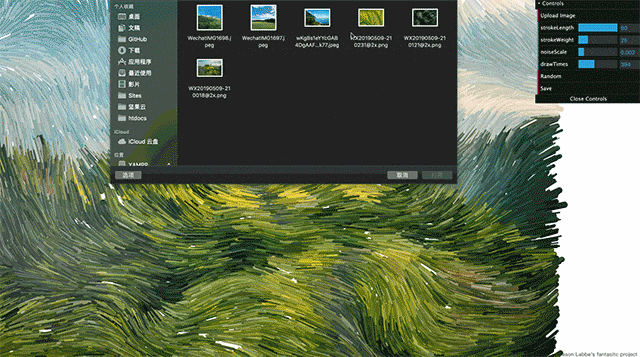
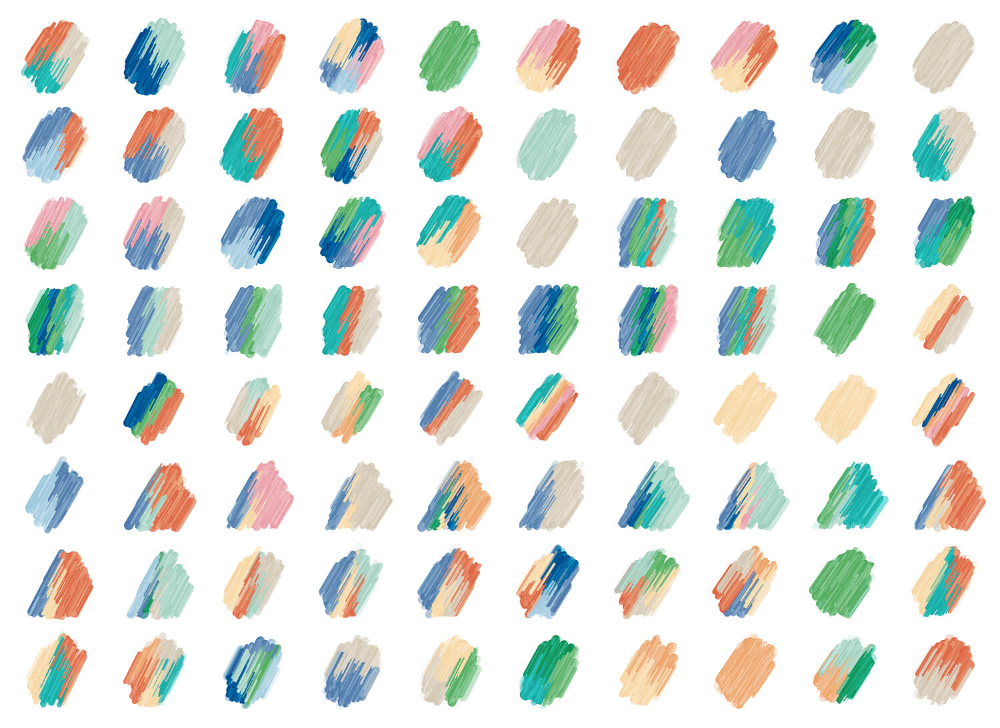

最近给澎湃新闻·湃客频道·有数栏目做了一个数据创作者画像，通过问卷调查，试图了解这些创作者们的身份和背景，兴趣与专长。
我们选取了湃客的五个特征进行可视化:
❶身份特征; ❷主要呈现形式; ❸关注领域; ❹常用的数据挖掘/分析工具; ❺常用的数据可视化工具
初稿，主要思路还是用简单的几何图形和颜色组织称一个形状。
在主要呈现形式、常用的数据挖掘/分析工具和可视化工具上，我们只关注数量，不过多关注他们所用的呈现形式或具体工具。
数据可视化工具：在图形左边位置就出现小星星★★；
数据挖掘分析工具： 数量用右边的波浪线代替～～；
呈现形式：是虚线的圈数，具体形状与身份特征的形状○△☐◇⎔相关。
这三者搭配组合下来感觉是一个个小邮戳。
在身份特征上，选用几何形状区分；在他们的关注领域选择用颜色表达。之前看过纽约时报的一个案例，如果一个人物具备某个特征，就在人物身上画出一笔。所以我想把湃客关注的领域也用类似的方式呈现，如果他关注了某个领域，他对应形状上就有会填充对应的颜色。这里只关注颜色，忽略颜色的面积。
这里采用的形式是用代码生成的笔刷， Jason Labbe 用 p5.js 做的一个生成油画笔触的效果后来我在他的基础上加了一个 dat.gui 控件，大家可以自行上传图片体验这个工具Noise flow field painter
但是这个工具做的时候没有设置保存为 svg 的格式，所以我又用 Processing 重新写了一遍可以保存为矢量文件，保证后面做成展版的清晰度。
具体操作思路是我先确定他们各自是什么身份（用不同的图形表示），然后用 Processing 根据他们关注的领域的数量，切分相应的份数，同时填充对应领域的颜色，然后导出图片，最后用可以生成画笔效果的 Processing 文件中再跑一遍。
就这样可以得到的一个油画质感的效果。
最后在把色块和形状结合起来